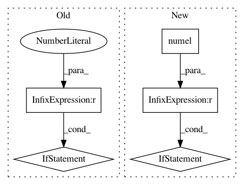

91b0d220c8e816766fd4565e1d2f5115d3afbefe,gpytorch/lazy/lazy_tensor.py,LazyTensor,matmul,#LazyTensor#Any#,630
Before Change
lazy_tsr = lazy_tsr.repeat(tensor.size(0), 1, 1)
elif tensor.size(0) == 1:
tensor = tensor.expand(lazy_tsr.size(0), tensor.size(1), tensor.size(2))
elif self.ndimension() > 3 or tensor.ndimension() > 3:
raise RuntimeError
func = Matmul(self.representation_tree())
return func(tensor, *self.representation())
After Change
to this method.
if (self.dim() == 2 and tensor.dim() == 1):
if self.shape[-1] != tensor.numel():
raise RuntimeError(
"LazyTensor (size={}) cannot be multiplied with right-hand-side Tensor (size={}).".format(
self.shape, tensor.shape
)
)
elif self.dim() != tensor.dim():
raise RuntimeError(
"LazyTensor (size={}) and right-hand-side Tensor (size={}) should have the same number "
"of dimensions.".format(self.shape, tensor.shape)
In pattern: SUPERPATTERN
Frequency: 3
Non-data size: 5
Instances
Project Name: cornellius-gp/gpytorch
Commit Name: 91b0d220c8e816766fd4565e1d2f5115d3afbefe
Time: 2018-10-12
Author: gpleiss@gmail.com
File Name: gpytorch/lazy/lazy_tensor.py
Class Name: LazyTensor
Method Name: matmul
Project Name: rtqichen/torchdiffeq
Commit Name: 7682f0ba7e3f527cb36372e8767cbd708666f9c4
Time: 2020-10-30
Author: rtqichen@gmail.com
File Name: torchdiffeq/_impl/scipy_wrapper.py
Class Name: ScipyWrapperODESolver
Method Name: integrate
Project Name: ecs-vlc/torchbearer
Commit Name: eca70286a076bcabd6a6690181a57f7da7ab30da
Time: 2019-01-24
Author: ewah1g13@soton.ac.uk
File Name: torchbearer/metrics/aggregators.py
Class Name: Std
Method Name: process_final